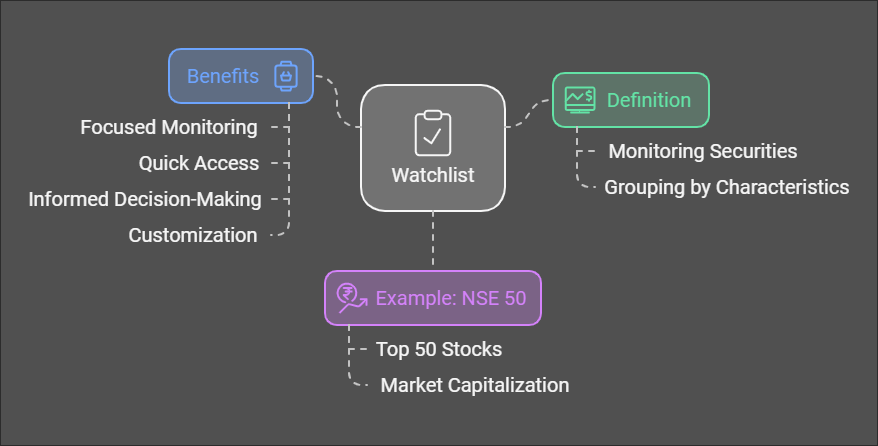

Introduction
What is TA27?
TA27 is a robust software platform designed to simplify and enhance the process of creating, testing, and optimizing trading strategies. It empowers traders by combining powerful data analysis tools with a user-friendly interface.
Benefits of Using TA27
- Custom Strategies: Build unique strategies tailored to your trading style and objectives.
- Comprehensive Analysis: Test and optimize strategies with detailed performance metrics.
- Enhanced Decision-Making: Gain actionable insights from historical data and advanced analytics.
Who Can Use This Software?
TA27 is designed for:
- Individual traders
- Portfolio managers
- Quantitative analysts
- Financial educators
Getting Started
Installation and Setup
1.1 Downloading the Application
To begin, download the latest version of the application from
.
Select the version compatible with your operating system (Windows, macOS, or Linux).
1.2 Installing the Application
After downloading, follow these steps to install:
Windows: Run the .exe file and follow the on-screen instructions to install the application.
macOS: Open the .dmg file, drag the application icon into the Applications folder, and launch it from there.
Linux: Extract the downloaded files and run the installer from the terminal using the following command: ./install.sh.
1.3 First-Time Setup and Configuration
Upon launching the application, you’ll be guided through a one-time setup:
Data Directory Selection:
Choose a folder where your historical data files will be stored. You can always modify this later in the settings.
Default Settings: Configure initial settings, such as your preferred trading symbols, date range, and display options for charts. [Include a placeholder image here showing the configuration screen with settings like data directory and default trading symbols.
Basic Interface Overview
The main interface is designed for ease of navigation, providing quick access to core functions like strategy selection, data import, and test execution.
1.4 Main Dashboard
The dashboard is the central hub for all actions within the app, organized into several key areas:
Top Menu Bar: Located at the top of the application window, this bar provides access to file management options, settings, help resources, and any additional tools. [Include a placeholder image showing the top menu bar, highlighting the settings and help
Sidebar: The sidebar on the left side of the screen lists available strategies, data sources, and quick access to recent analyses. Here, you can select a strategy or data set with a single click. [Placeholder image of the sidebar, showing strategy options and recent analyses.
Tradespace Area: The main Tradespace area in the center of the interface displays selected data, charts, and performance metrics. This area updates dynamically as you navigate between different strategies, test results, and analysis views. [Placeholder image displaying the Tradespace with example charts and results for a selected strategy.
Bottom Toolbar: At the bottom of the interface, the toolbar contains shortcuts for running tests, stopping processes, and viewing logs. These options help you control and monitor the status of active tests or optimizations.
1.5 Key Menu Options and Icons
File Menu: Import and export data, save or load configurations, and access data management settings.
Strategy Menu: Choose from the ready-made strategies or open the editor to start creating your own custom strategy.
Tools Menu: Access data analysis tools, including chart customization, indicator selection, and optimization features.
Tips for First-Time Users
Explore Provided Strategies: To get a quick start, explore some of the pre-configured strategies in the sidebar. Run a test on one of them to familiarize yourself with the testing and analysis workflow.
Adjust Display Settings: If you prefer a dark or light theme, this option is available in settings under "Display." You can also modify the chart’s default colors, line thickness, and gridlines to suit your preference.
This overview gives users a clear understanding of each section of the interface and how to navigate it. Let me know if there’s any specific interface functionality you’d like more detailed guidance on!
Data Management
Loading and Managing Data
3.1 Importing Historical Data
To effectively backtest strategies, the application supports importing historical data in various formats. Supported file types include .csv, .xlsx, and .json.
CSV Format: If you’re using a .csv file, it should contain columns for Date/Time, Open, High, Low, Close, and Volume, with date formats in YYYY-MM-DD format and time in HH:MM:SS.
Excel Format: .xlsx files should have similar columns to CSV files, with the Date/Time column correctly formatted. [Placeholder image showing a sample CSV or Excel file layout with proper columns and data.
To load your data:
Go to File > Import Data and select your file.
Confirm that the column mappings are correct in the preview window.
Select Save to finalize the import, and the data will appear in your Tradespace under the selected symbol.
3.2 Organizing Your Data
Data organization is essential for efficient testing. Consider creating subfolders for each trading symbol or market to keep data organized by asset type, date range, or frequency.
Symbol-Based Folders: Group files by ticker symbol, making it easier to locate specific data.
Time-Based Segmentation: Use separate files for different timeframes (e.g., monthly, yearly), particularly when working with large datasets.
Date Range and Data Compression
3.3 Selecting Date Ranges for Testing
In the testing configuration screen, you’ll find options to select the desired date range for each test. This allows you to specify start and end dates, enabling focused analysis on specific market periods or events.
Setting Start and End Dates: Use the date picker to define a specific period. Backtesting different date ranges helps analyze how a strategy performs under varying market conditions.
3.4 Data Compression
Data compression reduces the amount of data processed by aggregating smaller time intervals into larger ones. This can be beneficial for users working with high-frequency data or limited computing resources.
Compression Options: You can compress data to hourly, daily, or weekly intervals. Compressing intraday data (e.g., 1-minute bars) to daily bars can make tests run faster and allow for broader analysis.
Configuring Compression: In Settings, choose a compression option suitable for the test (e.g., daily bars for long-term strategies, 15-minute bars for intraday strategies).
[Placeholder image showing an example of the Date Range and Data Compression settings in the configuration menu.
Strategy Creation Process
Understanding the Workflow
- Define goals for your strategy (e.g., trend-following, mean-reversion).
- Choose indicators and parameters based on your trading objectives.
- Backtest your strategy on historical data to refine its performance.
Advantages of Custom Strategies
- Tailored risk management.
- Alignment with personal trading styles.
- Higher confidence in performance based on robust backtesting.
Step-by-Step Guide
- Open Strategy Editor: Access via the Strategy menu.
- Select Indicators: Add technical indicators like moving averages, RSI, etc.
- Define Rules: Set entry, exit, stop-loss, and take-profit conditions.
- Run Tests: Use historical data to evaluate performance.
- Refine: Optimize parameters for better risk-adjusted returns.
Watchlist
Understanding the Concept of a Watchlist
A watchlist is a curated collection of financial instruments, such as stocks, bonds, or commodities, that share common characteristics or features. This document aims to explain the concept of a watchlist, using the example of the NSE 50, which consists of the top 50 stocks listed on the National Stock Exchange of India (NSE).

What is a Watchlist?
A watchlist serves as a tool for investors and traders to monitor specific securities that they are interested in. By grouping these symbols together, users can easily track their performance, analyze market trends, and make informed decisions. The common feature that binds the items in a watchlist can vary; it may be based on market capitalization, sector, geographical location, or any other relevant criteria.
Example: NSE 50
The NSE 50 is a prime example of a watchlist. It includes the 50 largest and most liquid stocks traded on the National Stock Exchange of India. These stocks are selected based on their market capitalization and trading volume, making the NSE 50 a benchmark index for the Indian stock market. Investors often use this watchlist to gauge the overall health of the market and to identify potential investment opportunities within these top-performing companies
Benefits of Using a Watchlist
- Focused Monitoring:By creating a watchlist, investors can concentrate on a specific set of securities without being overwhelmed by the entire market.
- Quick Access: A watchlist provides quick access to important data such as price movements, volume changes, and news related to the selected symbols.
- Informed Decision-Making: With a watchlist, investors can make more informed decisions based on the performance of the stocks they are monitoring.
- Customization: Investors can customize their watchlists according to their investment strategies, risk tolerance, and market interests.
Conclusion
In summary, a watchlist is an essential tool for investors and traders, allowing them to keep track of a collection of symbols that share common features. The NSE 50 serves as a perfect illustration of how a watchlist can be structured based on specific criteria, providing valuable insights into market trends and investment opportunities. By utilizing a watchlist, investors can enhance their trading strategies and make more informed decisions in the dynamic world of finance.
Tradespace
Understanding the Tradespace Concept
This document explores the concept of a tradespace, which serves as a dynamic repository of trading strategies for various symbols and time frames. By executing a tradespace, traders can receive both existing and new trading signals, with the added benefit of real-time updates. This document aims to clarify the structure and functionality of a tradespace, highlighting its significance in the trading landscape.
What is a Tradespace?
A tradespace is essentially a comprehensive list of trading strategies that can be applied to one or multiple financial symbols. It encompasses various strategies that can operate across different time frames, allowing traders to adapt their approaches based on market conditions and personal trading preferences.
Components of a Tradespace
- Symbols: These are the financial instruments or assets that traders are interested in, such as stocks, currencies, or commodities.
- Strategies: Each strategy within the tradespace outlines a specific approach to trading, which may include technical analysis, fundamental analysis, or algorithmic trading methods.
- Time Frames: Strategies can be tailored to operate over different time frames, such as minutes, hours, days, or weeks, enabling traders to engage in day trading, swing trading, or long-term investing.
Execution of Tradespace
When a tradespace is executed, it generates trading signals based on the strategies defined within it. These signals can indicate potential buy or sell opportunities, helping traders make informed decisions. The execution process is crucial as it allows traders to react promptly to market changes.
Real-Time Updates
One of the key features of a tradespace is its ability to update in real time. As market conditions fluctuate, the tradespace continuously refreshes its signals and strategies. This ensures that traders are always equipped with the most current information, enhancing their ability to capitalize on market movements.
Conclusion
In summary, a tradespace is a vital tool for traders looking to optimize their trading strategies across various symbols and time frames. By providing real-time updates and generating actionable trading signals, a tradespace empowers traders to make informed decisions in a fast-paced market environment. Understanding and utilizing a tradespace can significantly enhance a trader's effectiveness and adaptability in the financial markets
Autotrade: A Function for Algorithmic Trading
Autotrade is a powerful function utilized in the realm of algorithmic trading, allowing traders to automate their trading strategies and execute trades based on predefined criteria. This document delves into the concept of autotrade, its significance in the trading landscape, and how it can enhance trading efficiency and effectiveness.
What is Autotrade?
Autotrade refers to the automated trading process where algorithms are employed to make trading decisions without human intervention. By leveraging complex mathematical models and historical data, autotrade systems can analyze market conditions, identify trading opportunities, and execute trades at optimal times.
Testing and Optimization
Running Tests
4.1 Executing a Backtest
To run a backtest, select a strategy from the sidebar, then specify your symbol and date range. Use the following steps:
Choose a Strategy: Select from the available strategies or load a custom script.
Configure Parameters: Adjust parameters like stop-loss, take-profit levels, and any custom settings relevant to your strategy.
Run Test: Click Run to start the backtest. A progress bar will appear, showing the test’s status.
4.2 Interpreting Results
Once the test completes, results populate the Tradespace with essential performance metrics and charts:
Equity Curve: Visualizes the growth of the account balance over time, allowing for quick insights into the strategy’s overall profitability.
Performance Summary: Key metrics like net profit, drawdown, and total trades are displayed here for an overview of the strategy’s effectiveness. [Placeholder image displaying an equity curve and performance summary.]
4.3 Navigating the Output
Each test’s results can be navigated using tabs in the Tradespace:
Trade List: Shows individual trades, including entry and exit points, profit or loss, and duration.
Performance Metrics: View detailed metrics such as Sharpe ratio, profit factor, and Sortino ratio.
Charts: See additional charts like drawdowns or PnL (Profit and Loss) distributions.
Walk-Forward Analysis
Walk-forward analysis is a technique for assessing strategy robustness by dividing data into training and testing segments, cycling through multiple timeframes.
4.4 Setting Up Walk-Forward Testing
In the Testing Configuration menu, enable Walk-Forward Analysis.
Define your training and testing periods by number of bars or date range (e.g., 300 bars for training, 100 bars for testing).
Set the sliding window: A setting that shifts the analysis window forward for each iteration, simulating a forward-looking approach.
[Placeholder image showing a configuration window with walk-forward settings, training, and testing period selections.]
4.5 Analyzing Walk-Forward Results
Walk-forward analysis generates a sequence of metrics across training and testing periods. The key outcome is a report highlighting periods where the strategy performed well in both in-sample (training) and out-of-sample (testing) data.
Evaluating Consistency: Look for periods where the strategy shows steady performance, suggesting a robust approach. Large discrepancies between training and testing results may indicate overfitting.
Parameter Optimization
Parameter optimization helps identify the best-performing values for each strategy variable, such as moving average periods or stop-loss levels.
4.6 Configuring Optimization Settings
[Placeholder image showing an example of the Date Range and Data Compression settings in the configuration menu.
In the Optimization tab, select the parameters to optimize (e.g., short and long moving average periods).
Set Range and Increment values for each parameter. For instance, set the short moving average range from 5 to 20 with an increment of 1 to test multiple combinations.
Choose an optimization metric, like net profit or Sharpe ratio, to rank each configuration.
4.7 Running and Reviewing Optimizations
Run Optimization: Click Optimize to run tests on all possible parameter combinations. Note that larger ranges and smaller increments increase computation time.
Result Analysis: After the run, an optimization heatmap will display performance across parameter combinations. Select configurations with both strong performance and consistent results across different settings. [Placeholder image of an optimization heatmap showing best-performing parameter combinations.]
Special Features
Running a Strategy on a Watchlist
Feature Overview
The Run on Watchlist feature allows users to apply a single strategy across multiple symbols within a designated watchlist. A watchlist is simply a collection of trading symbols (e.g., AAPL, MSFT, NIFTY, etc.), which users can create to represent specific sectors, indices, or asset classes. This feature runs the chosen strategy on each symbol in the list, delivering individual performance results per symbol for detailed comparison.
How to Use
Create or Load a Watchlist: In the Watchlist section, add the symbols you want to analyze.
Select Strategy: Choose a strategy from the sidebar.
Run on Watchlist: Click Run to apply the selected strategy across all symbols in the watchlist.
View Results: Results display in the Tradespace, with individual reports for each symbol, allowing you to navigate between them.
[Placeholder image showing a watchlist configuration screen and a summary of results for each symbol in the list.]
Benefits for Analysis and Decision Making
Running a strategy on a watchlist offers key insights that enhance both analysis and decision-making:
Sector/Market Insights: By viewing results across multiple symbols, traders can identify sectors or stocks where the strategy performs well, helping detect market trends and sector rotation.
Risk Management: Running a strategy on diverse assets provides a broader view of potential risks and benefits, encouraging balanced allocation rather than relying on a single asset.
Strategy Validation: Testing across various symbols helps assess the robustness of a strategy, especially if it consistently performs across different asset classes.
Optimized Decision-Making: The ability to compare performance by symbol allows traders to focus on assets with the best historical performance, enabling more confident, data-backed decisions.
Running a List of Strategies on a Single Symbol
Feature Overview
The Run Multiple Strategies feature enables users to analyze a single symbol with multiple strategies at once. This provides a comprehensive view of how different strategies perform on the selected asset, allowing users to compare and choose the most effective approach.
How To Use
Select Symbol: Choose the symbol you want to analyze.
Add Strategies: In the Strategies tab, select and add multiple strategies you wish to test.
Run Strategies: Click Run All to execute each strategy on the chosen symbol.
Compare Results: Results display side-by-side in the Tradespace, with separate performance reports for each strategy.
[Placeholder image showing the strategies list with performance metrics for each applied to the same symbol.]
Benefits for Analysis and Decision Making
This feature allows users to explore multiple strategies in one place, enabling powerful comparative analysis:
Performance Comparison: Testing different strategies on the same asset allows users to identify the most profitable or consistent strategy for that specific symbol.
Understanding Market Behavior: By comparing how different strategies react to the same data, users gain insights into how the asset behaves under various conditions, highlighting which market phases suit each strategy.
Risk and Reward Profiling: Multiple strategies provide different risk profiles, allowing users to choose approaches that align with their risk tolerance and goals.
Fine-Tuning Strategies: Comparing results side-by-side makes it easy to spot areas where a strategy may need adjustment, such as tweaking entry/exit conditions or modifying risk parameters.
Comparing Multiple Strategies
- Test different strategies on the same symbol.
- Compare risk-adjusted returns and drawdowns.
- [Placeholder Image: Strategy comparison table]
P-Value
The P-Value is used to assess the statistical significance of the strategy’s performance.
A lower P-Value (typically below 0.05) indicates that the strategy's results are statistically significant, suggesting that the observed returns are unlikely to have occurred by chance.
p-Value of the Strategy’s Performance:
Why it matters:
The p-value measures the probability that the observed performance occurred by random chance. A p-value below a certain threshold (commonly 0.05) indicates that your strategy’s performance is statistically significant, meaning it’s unlikely to be due to random noise.
How it helps robustness:
If the p-value is low, you can be more confident that your strategy is generating real alpha (excess returns). It’s a direct way of checking whether the performance is significantly better than random trading.
Measure:
Conduct a hypothesis test on key performance metrics (e.g., Sharpe ratio or net profit) to calculate the p-value.
The null hypothesis could be that the strategy generates zero excess return, and the test would determine whether the observed returns significantly exceed this.
Interpretation of p-value:
Low p-value (< 0.05): Reject the null hypothesis — your strategy's mean return is significantly different from zero, indicating that it likely has a real edge.
High p-value (>= 0.05): Fail to reject the null hypothesis — there's insufficient evidence to conclude that your strategy’s mean return is different from zero, which may suggest the performance could be due to random chance.
Conclusion:
Statistical Significance: A low p-value strongly suggests that the performance of your strategy is statistically significant. In other words, your strategy's returns are unlikely to be a result of random fluctuations, and there is a high probability that your strategy is generating real alpha (i.e., excess returns over zero).
Confidence: You can be very confident (with a significance level of ~0.1%) that your strategy has a real edge and is not just capitalizing on randomness.
Practical Implications:
This is a positive result for the robustness of your strategy.
You may want to further analyze other aspects of the strategy (e.g., stability over time, drawdown, etc.) to reinforce this conclusion.
SQN
The System Quality Number (SQN) is a measure of the system's performance.
>A higher SQN indicates a better risk-adjusted return. Generally:
SQN < 1: Poor system
SQN between 1 and 2: Average system
SQN between 2 and 3: Good system
SQN > 3: Excellent system.
Rolling P-Value
Rolling P-Value is calculated over a moving window. It helps you track the statistical significance of your strategy's performance over time.
Rolling SQN
Rolling SQN measures the system quality over a rolling period, giving insights into how the risk-adjusted return of the strategy changes across different periods.
BOOTSTRAP
Bootstrap Resampling:
What it does: Bootstrap resampling involves taking multiple random samples (with replacement) from your existing trade data to simulate different possible outcomes. This helps assess how stable your strategy's performance is across multiple simulated scenarios.
Why it's robust: Instead of relying on a single performance result, you get a distribution of outcomes, allowing you to calculate confidence intervals for your key metrics (net profit, Sharpe ratio, etc.).
CALMAR-RATIO
A Calmar Ratio of 2.7 indicates that your trading strategy is generating 2.7 times more annualized return than the maximum drawdown experienced. Here's how to interpret this:
Interpretation of Calmar Ratio:
Calmar Ratio > 1: A ratio greater than 1 indicates that the strategy’s annualized returns exceed its worst drawdown, which generally means the system is performing well and efficiently managing risk.
Calmar Ratio of 2.7: A value of 2.7 means that for every unit of risk (drawdown), the strategy produces 2.7 units of return. This is considered very good in terms of risk-adjusted performance. It indicates that your system is generating substantial returns relative to the worst loss it experienced.
General Guidelines:
Calmar Ratio < 1: The system is risky, as the drawdowns are larger than the returns.
Calmar Ratio > 1: Indicates good performance. The higher the ratio, the better the system balances return with risk.
Calmar Ratio > 3: Considered excellent in most trading systems, especially over a long period.
With a Calmar Ratio of 2.7, your system shows a good balance of return relative to its risk, indicating a robust strategy with efficient risk management.
RECOVERY-FACTOR
A Recovery Factor of 6.07 means that your trading strategy's net profit is approximately 6 times larger than its maximum drawdown.
Interpretation of Recovery Factor:
Recovery Factor > 1: This means the system has recovered more profit than it lost during its worst drawdown. A value above 1 is generally good.
Recovery Factor of 6.07: This suggests that the system has recovered 6 times its largest loss, meaning it performs very well in recovering from drawdowns and continues generating profit.
General Guidelines:
Recovery Factor < 1: The system struggles to recover from drawdowns and may indicate a risky or less profitable system.
Recovery Factor > 1: Indicates that the system is profitable and able to recover from losses. The higher the value, the better the system is at recovering from losses.
Recovery Factor > 5: Considered excellent. Your system is highly profitable and demonstrates strong resilience in recovering from drawdowns.
With a Recovery Factor of 6.07, your system is considered very robust, as it has recovered significantly more profit than its worst drawdown.
6. Getting Support
We are here to help you make the most of the application. Whether you’re facing an issue, have a question about strategy configuration, or need guidance on using advanced features, our support team is ready to assist.
Support Options
1. Email Support
For questions, troubleshooting, or feedback, reach out to us via email. Please include a detailed description of the issue, any error messages, and, if possible, a screenshot to help us resolve your issue faster.
Support Email: info@s2analytics.com
You can expect a response within [expected response time, e.g., 24 hours] during our support hours
2. Phone Support
If you prefer to speak with a support representative directly, call us during our business hours
Phone Number: +91 9289060691
Support Hours: Support hours and timezone, Mon-Fri, 9 AM - 6 PM , Sat 10 AM - 2 PM
3. Knowledge Base and FAQs
Check our online knowledge base for answers to common questions and detailed guides on using each feature. [Placeholder link to a knowledge base or FAQ section if available]
4. Remote Assistance (if applicable)
For complex issues, we may offer remote assistance to guide you through troubleshooting in real-time. Please contact us through email or phone to schedule an appointment if required.
With these resources, our goal is to ensure that you get the most out of the application, regardless of your experience level.
7. About S2 Analytics Pvt Ltd
Company Overview
S2 Analytics Pvt Ltd, founded in 2008, has been dedicated to developing cutting-edge software for technical analysis and market insights. Our mission is to provide traders and investors with powerful, data-driven tools that support informed decision-making and effective strategy development.
Our Expertise
With over a decade of experience in financial technology, S2 Analytics has built a reputation for creating reliable, high-performance software tailored to meet the diverse needs of traders. We understand the complexities of the markets and the demands of technical analysis, which drive us to continuously innovate and improve our products.
Our Team
The S2 Analytics team consists of experts in quantitative finance, software engineering, and market analysis. Our founders and lead developers bring extensive industry experience, enabling us to design products that align with real-world trading needs. We work closely with technical analysts, traders, and researchers to ensure that our software remains user-friendly, accurate, and adaptable to the fast-evolving financial landscape.
Contact Information
For any inquiries or support needs, please reach out to us:
Address: E-364, LGF , Greater Kailash - 2 New Delhi - 110048, India.
Phone: +91 9289060691
Email: general inquiries email : info@s2analytics.com
We are proud to support the trading community and look forward to helping you succeed with our products.